Code
from pathlib import Path
import os, sys
import cv2
from PIL import Image
import matplotlib.pyplot as plt
import numpy as npJanne Mäyrä
February 27, 2023
Reference map tile is 213405, from both 1965 and 1984. From these maps, all classes were manually annotated by human experts to use as training and validation data. All reference masks are stored as separate files, so we first merge them into a single file that has encoding
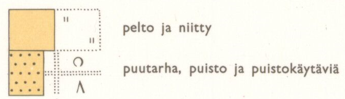
Fields contains the top-left class from above image, “Pellot”, in this work.
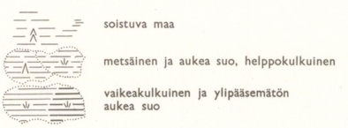
The classes that indicate mires are
| Finnish term in basic maps | Basic maps | Topographical database |
|---|---|---|
| Metsäinen suo, helppokulkuinen | Marsh, easy to traverse, open | Open bog, easy to traverse, treeless |
| Aukea suo, helppokulkuinne | Marsh, easy to traverse, forested | Bog, easy to traverse, forested |
| Vaikeakulkuinen aukea suo | Marsh, difficult to traverse, open | Open fen, difficult to traverse, treeless |
| Ylitsepääsemätön aukea suo | Marsh, insurmountable, open | - |
| - | - | Fen, difficult to traverse forested |
In this work, Mires contain all the classes aside from paludified area (soistuva maa).
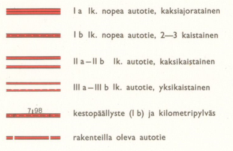
Roads contain all of the above classes that indicate paved roads.
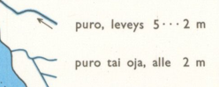
Watercourses contains the above classes:
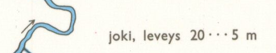
Water bodies contains all water bodies marked as large blue areas.
ref_path = Path('../data/reference_masks')
fields = cv2.imread(str(ref_path/'1965/fields.png'), cv2.IMREAD_UNCHANGED)
water_bodies = cv2.imread(str(ref_path/'1965/lakes.png'), cv2.IMREAD_UNCHANGED)
rivers = cv2.imread(str(ref_path/'1965/rivers.png'), cv2.IMREAD_UNCHANGED)
ditches = cv2.imread(str(ref_path/'1965/ditches.png'), cv2.IMREAD_UNCHANGED)
roads = cv2.imread(str(ref_path/'1965/roads.png'), cv2.IMREAD_UNCHANGED)
marshes = cv2.imread(str(ref_path/'1965/marshes.png'), cv2.IMREAD_UNCHANGED)
watercourses = ditches + rivers
fig, axs = plt.subplots(2,3, figsize=(15,10), dpi=200)
for a in axs.flatten(): a.axis('off')
axs[0,0].imshow(fields)
axs[0,0].set_title('Fields and gardens')
axs[0,1].imshow(roads)
axs[0,1].set_title('Major roads')
axs[0,2].set_title('Mires')
axs[0,2].imshow(marshes)
axs[1,0].imshow(ditches)
axs[1,0].set_title('Ditches')
axs[1,1].imshow(rivers)
axs[1,1].set_title('Rivers')
axs[1,2].imshow(water_bodies)
axs[1,2].set_title('Water bodies')
plt.show()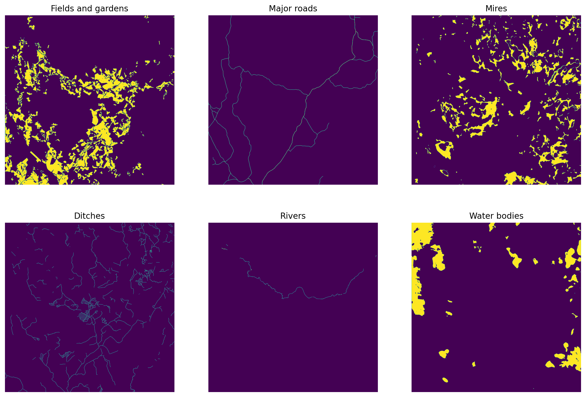
Stack these into a single image and save it.
outim = np.empty((fields.shape), np.uint8)
outim[fields > 0] = 1
outim[marshes > 0] = 2
outim[roads > 0] = 3
outim[watercourses > 0] = 4
outim[water_bodies > 0] = 5
fig = plt.figure(figsize=(10,10), dpi=300)
plt.imshow(outim, vmin=0, vmax=5, interpolation='none')
cv2.imwrite(str(ref_path/'combined_mask_1965.png'), outim.astype('uint8'))
plt.show()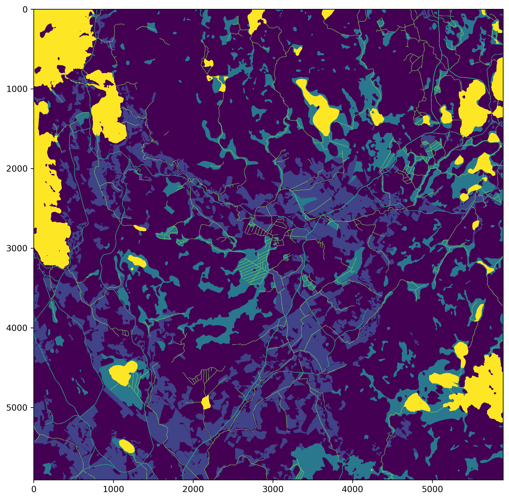
Do the same for 1984.
ref_path = Path('../data/reference_masks')
fields = cv2.imread(str(ref_path/'1984/fields.png'), cv2.IMREAD_UNCHANGED)
water_bodies = cv2.imread(str(ref_path/'1984/lakes.png'), cv2.IMREAD_UNCHANGED)
rivers = cv2.imread(str(ref_path/'1984/rivers.png'), cv2.IMREAD_UNCHANGED)
ditches = cv2.imread(str(ref_path/'1984/ditches.png'), cv2.IMREAD_UNCHANGED)
roads = cv2.imread(str(ref_path/'1984/roads.png'), cv2.IMREAD_UNCHANGED)
marshes = cv2.imread(str(ref_path/'1984/marshes.png'), cv2.IMREAD_UNCHANGED)
watercourses = ditches + rivers
fig, axs = plt.subplots(2,3, figsize=(15,10), dpi=200)
for a in axs.flatten(): a.axis('off')
axs[0,0].imshow(fields)
axs[0,0].set_title('Fields and gardens')
axs[0,1].imshow(roads)
axs[0,1].set_title('Major roads')
axs[0,2].set_title('Mires')
axs[0,2].imshow(marshes)
axs[1,0].imshow(ditches)
axs[1,0].set_title('Ditches')
axs[1,1].imshow(rivers)
axs[1,1].set_title('Rivers')
axs[1,2].imshow(water_bodies)
axs[1,2].set_title('Water bodies')
plt.show()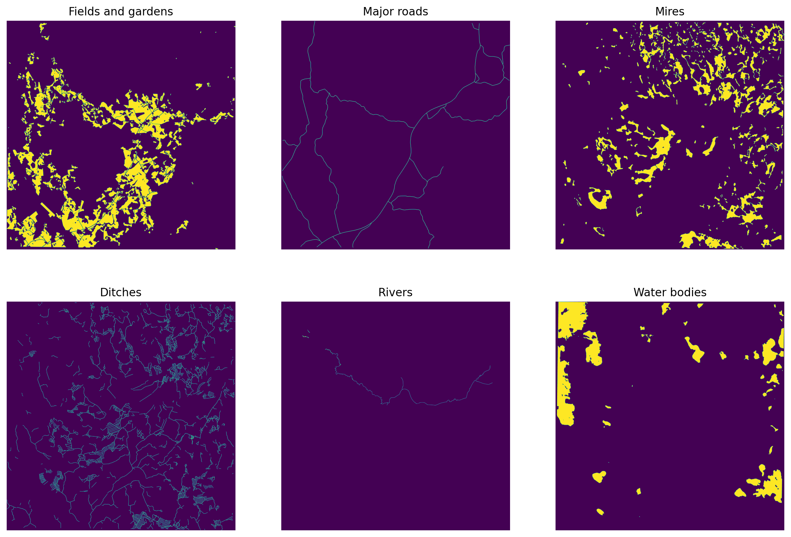
Stack these into a single mask.
outim = np.empty((fields.shape), np.uint8)
outim[fields > 0] = 1
outim[marshes > 0] = 2
outim[roads > 0] = 3
outim[watercourses > 0] = 4
outim[water_bodies > 0] = 5
fig = plt.figure(figsize=(10,10), dpi=300)
plt.imshow(outim, vmin=0, vmax=5, interpolation='none')
cv2.imwrite(str(ref_path/'combined_mask_1984.png'), outim.astype('uint8'))
plt.show()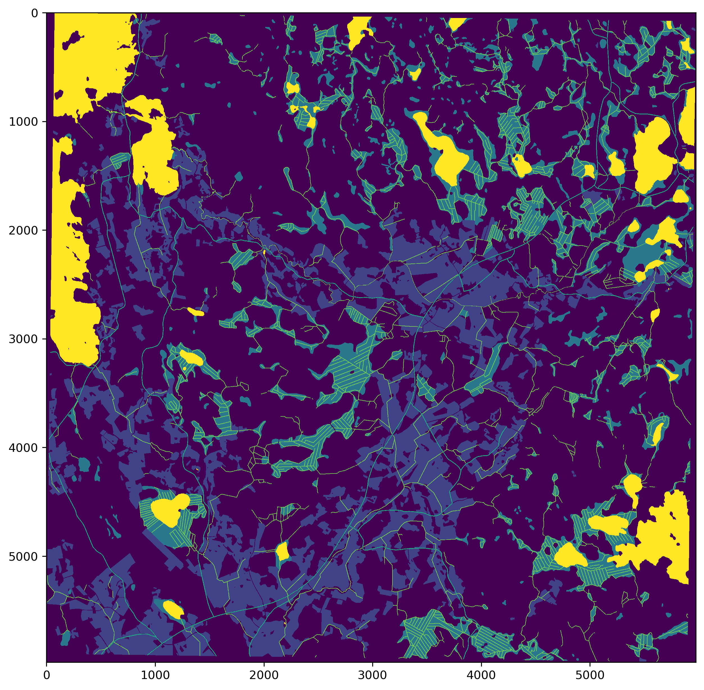
from matplotlib import colors
cmap = colors.ListedColormap(['white', 'tab:orange', 'tab:grey', 'tab:red', 'tab:cyan', 'tab:blue'])
bounds=[0,1,2,3,4,5]
norm = colors.BoundaryNorm(bounds, cmap.N)
mask_65 = cv2.imread(str(ref_path/'combined_mask_1965.png'),0)
mask_84 = cv2.imread(str(ref_path/'combined_mask_1984.png'),0)
fig, axs = plt.subplots(1,2, figsize=(10,6), dpi=300)
for a in axs: a.axis('off')
axs[0].imshow(mask_65, vmin=0, vmax=5, cmap=cmap, interpolation='none')
axs[0].set_title('1965')
axs[1].imshow(mask_84, vmin=0, vmax=5, cmap=cmap, interpolation='none')
axs[1].set_title('1984')
plt.tight_layout()
plt.show()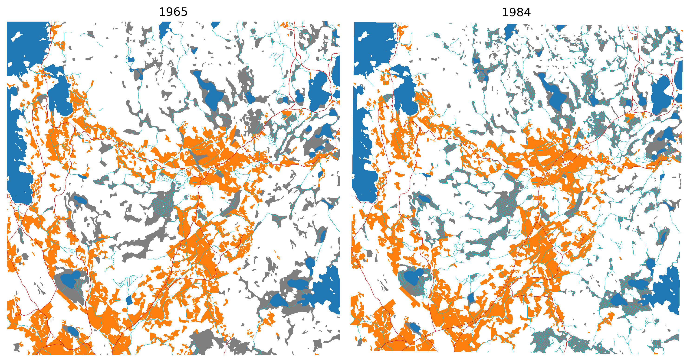
Use the corresponding cropped ground control points to georeference these masks, so that tiling and demosaicing is easier.
gcps = pd.read_csv(f'../data/gcps/cropped/213405_1965.jpg.points')
in_crs = CRS('EPSG:4326')
out_crs = CRS('EPSG:3067')
transformer = Transformer.from_crs(in_crs, out_crs, always_xy=True)
gcp_list = []
for row in gcps.itertuples():
tfmd_x, tfmd_y = transformer.transform(row.mapX, row.mapY)
gcp_list.append(gdal.GCP(tfmd_x, tfmd_y, 1, row.pixelX, row.pixelY))
translate_kwargs = {
'GCPs': gcp_list,
'format': 'GTIFF',
'bandList': [1],
'outputType': gdal.gdalconst.GDT_Int16
}
inpath = '../data/reference_masks/combined_mask_1965.png'
outpath = '../data/reference_masks/combined_mask_1965.tif'
gdal.Translate(outpath, inpath, **translate_kwargs)
gdal.Warp(outpath, outpath, options='-r near -tps -co COMPRESS=LZW -t_srs EPSG:3067')gcps = pd.read_csv(f'../data/gcps/cropped/213405_1984.jpg.points')
in_crs = CRS('EPSG:4326')
out_crs = CRS('EPSG:3067')
transformer = Transformer.from_crs(in_crs, out_crs, always_xy=True)
gcp_list = []
for row in gcps.itertuples():
tfmd_x, tfmd_y = transformer.transform(row.mapX, row.mapY)
gcp_list.append(gdal.GCP(tfmd_x, tfmd_y, 1, row.pixelX, row.pixelY))
translate_kwargs = {
'GCPs': gcp_list,
'format': 'GTIFF',
'bandList': [1],
'outputType': gdal.gdalconst.GDT_Int16
}
inpath = '../data/reference_masks/combined_mask_1984.png'
outpath = '../data/reference_masks/combined_mask_1984.tif'
gdal.Translate(outpath, inpath, **translate_kwargs)
gdal.Warp(outpath, outpath, options='-r near -tps -co COMPRESS=LZW -t_srs EPSG:3067')After georeferencing the masks are correctly aligned.
fig, ax = plt.subplots(1,2, dpi=150)
refmap = rio.open('../data/maps/aligned_maps/213405_1965.tif')
rioplot.show(refmap, ax=ax[0])
refmap.close()
refmask = rio.open('../data/reference_masks/combined_mask_1965.tif')
rioplot.show(refmask, ax=ax[1], cmap=cmap, vmin=0, vmax=5, interpolation='none')
refmask.close()
plt.tight_layout()
plt.show()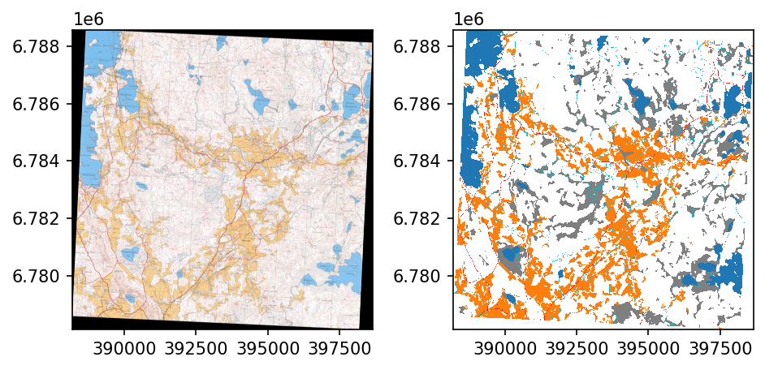
fig, ax = plt.subplots(1,2, dpi=150)
refmap = rio.open('../data/maps/aligned_maps/213405_1984.tif')
rioplot.show(refmap, ax=ax[0])
refmap.close()
refmask = rio.open('../data/reference_masks/combined_mask_1965.tif')
rioplot.show(refmask, ax=ax[1], cmap=cmap, vmin=0, vmax=5, interpolation='none')
refmask.close()
plt.tight_layout()
plt.show()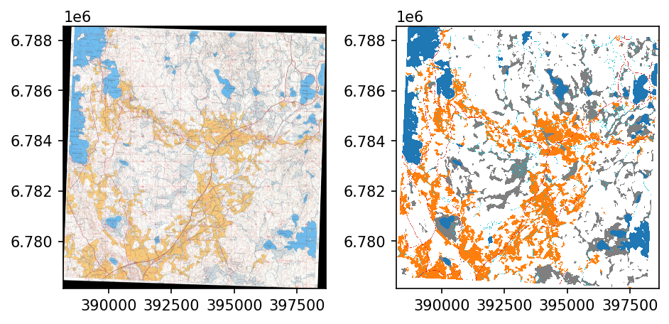
Use around half of the map as training and validation data and rest as test data.
Resulting georeferenced images are 6167x6167 pixels, so with 256x256 pixel images, 24x24 grid can be extracted.
Split tiles in 75:25 ratio such that western 24x16 grid is used as training data and eastern 8x24 is used as validation data.
for year in years:
with rio.open(f'../data/reference_masks/combined_mask_{year}.tif') as src:
trainwin = Window.from_slices((0, 256*24), (0, 256*16))
valwin = Window.from_slices((0, 256*24), (256*16, 256*24))
orig_prof = src.profile
prof = src.profile
prof.update({
'height': trainwin.height,
'width': trainwin.width,
'transform': rio.windows.transform(trainwin, src.transform)
})
with rio.open(f'../data/reference_masks/train_mask_{year}.tif', 'w', **prof) as dst:
dst.write(src.read(window=trainwin))
prof = src.profile
prof.update({
'height': valwin.height,
'width': valwin.width,
'transform': rio.windows.transform(valwin, src.transform)
})
with rio.open(f'../data/reference_masks/val_mask_{year}.tif', 'w', **prof) as dst:
dst.write(src.read(window=valwin))
with rio.open(f'../data/maps/aligned_maps/213405_{year}.tif') as src:
trainwin = Window.from_slices((0, 256*24), (0, 256*16))
valwin = Window.from_slices((0, 256*24), (256*16, 256*24))
prof = src.profile
prof.update({
'height': trainwin.height,
'width': trainwin.width,
'transform': rio.windows.transform(trainwin, src.transform)
})
with rio.open(f'../data/reference_masks/train_im_{year}.tif', 'w', **prof) as dst:
dst.write(src.read(window=trainwin))
prof = src.profile
prof.update({
'height': valwin.height,
'width': valwin.width,
'transform': rio.windows.transform(valwin, src.transform)
})
with rio.open(f'../data/reference_masks/val_im_{year}.tif', 'w', **prof) as dst:
dst.write(src.read(window=valwin))Tile our training data and validation data, using Tiler from drone_detector package.
for year in years:
tilesize = 256
outpath = Path(f'../data/processed/train/{year}')
trainmap_fn = f'../data/reference_masks/train_im_{year}.tif'
trainmask_fn = f'../data/reference_masks/train_mask_{year}.tif'
map_tiler = Tiler(outpath=outpath, gridsize_x=tilesize, gridsize_y=tilesize, overlap=(0,0))
map_tiler.tile_raster(trainmap_fn)
map_tiler.raster_path = outpath/'mask_tiles'
map_tiler.tile_raster(trainmask_fn)Show a few example patches for the training data.
fig, axs = plt.subplots(4,4, figsize=(13,12), dpi=200)
for a in axs.flatten():
a.set_xticks([])
a.set_yticks([])
axs[0,0].set_title('1965 map patch')
axs[0,1].set_title('1965 mask')
axs[0,2].set_title('1984 map patch')
axs[0,3].set_title('1984 mask')
for i in range(4):
ex_file = random.sample(os.listdir('../data/processed/train/1965/raster_tiles/'), 1)[0]
with rio.open(f"../data/processed/train/1965/raster_tiles/{ex_file}") as im:
rioplot.show(im, ax=axs[i,0])
with rio.open(f"../data/processed/train/1965/mask_tiles/{ex_file}") as mask:
rioplot.show(mask, ax=axs[i,1], cmap=cmap, interpolation='none', vmin=0, vmax=5)
maskvals = mask.read()
with rio.open(f"../data/processed/train/1984/raster_tiles/{ex_file}") as im:
rioplot.show(im, ax=axs[i,2])
with rio.open(f"../data/processed/train/1984/mask_tiles/{ex_file}") as mask:
rioplot.show(mask, ax=axs[i,3], cmap=cmap, interpolation='none', vmin=0, vmax=5)
maskvals = mask.read()
norm = colors.Normalize(vmin=0,vmax=6)
sm = plt.cm.ScalarMappable(cmap=cmap, norm=norm)
cbar = fig.colorbar(sm, ax=axs.ravel().tolist(), ticks=np.arange(0.5,6.5), aspect=80)
cbar.ax.set_yticklabels(['Background', 'Fields', 'Mires', 'Roads', 'Watercourses', 'Water bodies'])
plt.savefig('../data/figures/example_patches.jpg', dpi=300, bbox_inches='tight')
plt.show()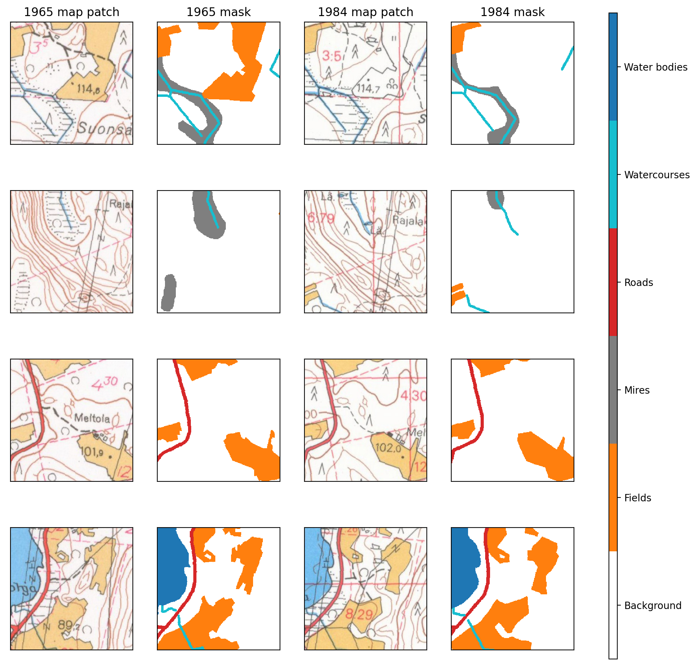
Do the same for test set and visualize them also.
for year in years:
tilesize = 256
outpath = Path(f'../data/processed/val/{year}')
valmap_fn = f'../data/reference_masks/val_im_{year}.tif'
valmask_fn = f'../data/reference_masks/val_mask_{year}.tif'
map_tiler = Tiler(outpath=outpath, gridsize_x=tilesize, gridsize_y=tilesize, overlap=(0,0))
map_tiler.tile_raster(valmap_fn)
map_tiler.raster_path = outpath/'mask_tiles'
map_tiler.tile_raster(valmask_fn)ex_file = random.sample(os.listdir('../data/processed/val/1965/raster_tiles/'), 1)[0]
fig, axs = plt.subplots(2,2, figsize=(11,11))
for a in axs.flatten():
a.set_xticks([])
a.set_yticks([])
with rio.open(f"../data/processed/val/1965/raster_tiles/{ex_file}") as im:
rioplot.show(im, ax=axs[0,0])
with rio.open(f"../data/processed/val/1965/mask_tiles/{ex_file}") as mask:
rioplot.show(mask, ax=axs[0,1], cmap=cmap, interpolation='none', vmin=0, vmax=5)
maskvals = mask.read()
with rio.open(f"../data/processed/val/1984/raster_tiles/{ex_file}") as im:
rioplot.show(im, ax=axs[1,0])
with rio.open(f"../data/processed/val/1984/mask_tiles/{ex_file}") as mask:
rioplot.show(mask, ax=axs[1,1], cmap=cmap, interpolation='none', vmin=0, vmax=5)
maskvals = mask.read()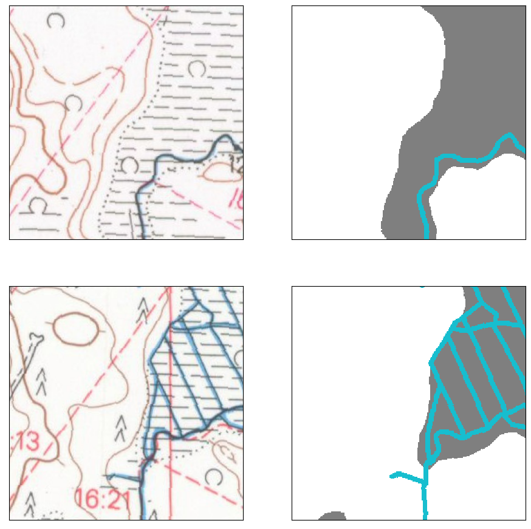